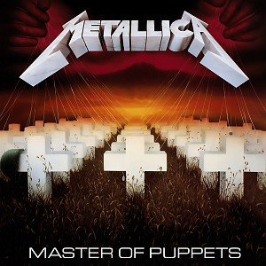

O nome Metallica surgiu de uma conversa de Ulrich, fundador da banda, com seu amigo Ron Quintana, que criava
nomes para um fanzine. Nesse sentido, ele sugeriu as opções Metal Mania e Metallica, sendo o último o
escolhido.
Na época, o grupo estava em processo de formação, após o baterista Lars Ulrich anunciar em um jornal que
procurava músicos para uma banda. Depois de conhecer o guitarrista James Hetfield, um novo anúncio foi
colocado, dessa vez reforçando a necessidade de um baixista.
Mas, ao invés de um baixista aparecer, o vocalista e guitarrista Dave Mustaine respondeu ao anúncio,
impressionando não só pela sonoridade.
Somente ao lançar o álbum homônimo, também conhecido por The Black Album (1991), que o Metallica ficou
famoso. Nesse sentido, o disco inclui canções famosas, como Enter Sandman, Sad But True e The Unforgiven.
A nova sonoridade dava ao quarteto o título de “vendido”, como se tivessem abandonado o thrash metal dos
álbuns anteriores por algo mais comercial.
Apesar disso, não apenas as faixas são conhecidas, como também a capa do disco se tornou icônica nos anos 90.



O Metallica já recebeu 28 prêmios, sendo eles dois American Music Awards, três Billboard Music Awards e nove
Grammys. Além disso, a banda venceu a categoria de Melhor Documentário no Independent Spirit Awards, além de
Produção do Ano no Juno Awards.
Por fim, acumulou sete prêmios pela revista Kerrang! e dois VMAs. Mais do que os prêmios, a banda também já
recebeu diversas nomeações ao longo da carreira, relevantes para sua biografia.